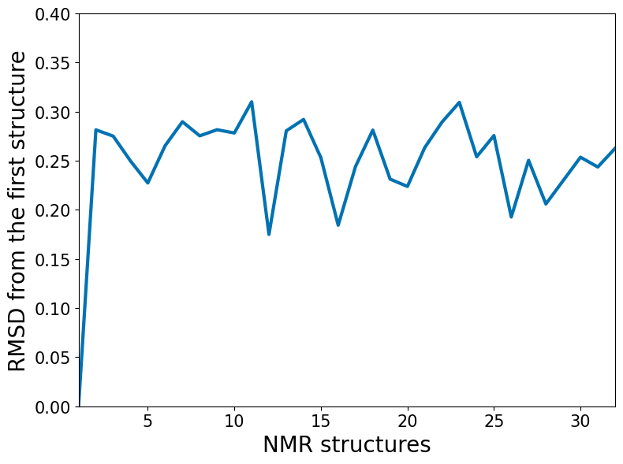

Superimpose and RMSD
using MDToolbox, PyPlot
PyPlot.plt.style.use("seaborn-colorblind");
ENV["COLUMNS"] = 110; #display width for MDToolboxt = readpdb("data/3gb1.pdb")32x855 TrjArray{Float64, Int64}
| A | A | … A |
| 1MET | 1MET | … 56GLU |
| 1N | 2CA | … 855HG3 |
| -13.15 -1.71 5.51 | -12.20 -2.85 5.70 | … 10.24 2.24 -4.53 |
| -13.16 -2.75 4.19 | -12.38 -3.43 5.26 | 10.29 1.79 -3.20 |
| -13.26 -2.20 5.12 | -12.23 -3.26 5.29 | 11.09 3.24 -6.13 |
| -12.45 -4.30 6.28 | -12.25 -3.22 5.28 | 11.75 2.57 -3.31 |
| -13.05 -1.52 5.31 | -12.15 -2.68 5.56 | 10.46 1.51 -3.50 |
| -12.98 -3.74 6.65 | -12.43 -3.31 5.34 | … 11.26 3.06 -3.59 |
| -13.03 -2.10 3.64 | -12.47 -2.79 4.83 | 10.38 1.53 -3.30 |
| -13.00 -2.17 5.21 | -12.09 -3.19 5.78 | 11.32 3.37 -5.78 |
| -12.57 -2.96 3.87 | -12.12 -3.42 5.21 | 10.36 1.38 -3.53 |
| -12.60 -2.85 4.27 | -12.16 -3.02 5.68 | 10.44 1.40 -3.37 |
| -13.12 -1.61 4.72 | -12.34 -2.60 5.52 | … 10.96 3.58 -5.68 |
| ⋮ | ⋮ | ⋱ ⋮ |
| -13.46 -2.54 6.05 | -12.41 -3.14 5.18 | 10.33 1.63 -3.72 |
| -12.61 -4.31 6.34 | -12.22 -3.51 5.15 | 10.26 1.56 -3.59 |
| -13.24 -2.72 6.28 | -12.16 -3.34 5.45 | 11.30 2.91 -3.41 |
| -13.21 -2.29 5.61 | -12.13 -3.31 5.53 | 11.76 2.84 -5.65 |
| -12.75 -2.42 4.33 | -12.22 -2.96 5.61 | … 11.53 3.05 -5.67 |
| -13.32 -2.12 5.10 | -12.27 -3.17 5.25 | 10.38 1.88 -3.32 |
| -13.07 -2.31 4.32 | -12.27 -3.22 5.19 | 11.65 3.11 -5.90 |
| -12.76 -3.69 6.68 | -12.11 -3.33 5.38 | 11.51 2.97 -5.63 |
| -13.21 -2.55 5.53 | -12.06 -3.41 5.11 | 10.26 1.60 -3.20 |
| -13.13 -2.12 4.11 | -12.34 -3.00 5.02 | … 12.68 3.28 -4.88 |
| -12.81 -2.86 4.32 | -12.23 -3.33 5.62 | 9.98 2.33 -5.34 |t = t["atomname CA"]32x56 TrjArray{Float64, Int64}
| A | A | … A |
| 1MET | 2THR | … 56GLU |
| 1CA | 2CA | … 56CA |
| -12.20 -2.85 5.70 | -8.56 -2.53 6.83 | … 11.49 0.13 -5.58 |
| -12.38 -3.43 5.26 | -8.87 -2.64 6.54 | 11.44 0.44 -5.31 |
| -12.23 -3.26 5.29 | -8.72 -2.69 6.68 | 11.25 0.63 -5.48 |
| -12.25 -3.22 5.28 | -8.71 -2.59 6.57 | 11.68 -0.09 -5.47 |
| -12.15 -2.68 5.56 | -8.52 -2.44 6.78 | 11.68 -0.04 -5.48 |
| -12.43 -3.31 5.34 | -8.88 -2.65 6.64 | … 11.38 0.31 -5.62 |
| -12.47 -2.79 4.83 | -8.96 -2.38 6.31 | 11.32 0.25 -5.52 |
| -12.09 -3.19 5.78 | -8.49 -2.67 7.00 | 11.30 0.70 -5.25 |
| -12.12 -3.42 5.21 | -8.62 -2.86 6.66 | 11.62 -0.11 -5.43 |
| -12.16 -3.02 5.68 | -8.57 -2.46 6.85 | 11.66 -0.05 -5.34 |
| -12.34 -2.60 5.52 | -8.73 -2.27 6.76 | … 11.08 0.87 -5.37 |
| ⋮ | ⋮ | ⋱ ⋮ |
| -12.41 -3.14 5.18 | -8.91 -2.49 6.59 | 11.38 0.16 -5.77 |
| -12.22 -3.51 5.15 | -8.73 -2.78 6.53 | 11.64 0.04 -5.38 |
| -12.16 -3.34 5.45 | -8.67 -2.57 6.82 | 11.47 0.16 -5.46 |
| -12.13 -3.31 5.53 | -8.57 -2.69 6.80 | 11.61 0.16 -5.16 |
| -12.22 -2.96 5.61 | -8.63 -2.57 6.89 | … 11.24 0.31 -5.38 |
| -12.27 -3.17 5.25 | -8.78 -2.54 6.67 | 11.39 0.51 -5.45 |
| -12.27 -3.22 5.19 | -8.76 -2.62 6.60 | 11.36 0.48 -5.34 |
| -12.11 -3.33 5.38 | -8.60 -2.68 6.76 | 11.52 0.26 -5.29 |
| -12.06 -3.41 5.11 | -8.63 -2.73 6.65 | 11.30 0.45 -5.44 |
| -12.34 -3.00 5.02 | -8.86 -2.42 6.49 | … 11.33 0.19 -5.53 |
| -12.23 -3.33 5.62 | -8.71 -2.59 6.92 | 11.31 0.03 -5.65 |t_fitted = superimpose(t[1, :], t)32x56 TrjArray{Float64, Int64}
| A | A | … A |
| 1MET | 2THR | … 56GLU |
| 1CA | 2CA | … 56CA |
| -12.20 -2.84 5.70 | -8.56 -2.53 6.83 | … 11.49 0.13 -5.58 |
| -12.38 -3.43 5.26 | -8.87 -2.64 6.54 | 11.43 0.45 -5.31 |
| -12.23 -3.26 5.30 | -8.71 -2.69 6.69 | 11.24 0.63 -5.49 |
| -12.24 -3.26 5.31 | -8.70 -2.62 6.60 | 11.66 -0.06 -5.49 |
| -12.16 -2.69 5.58 | -8.52 -2.45 6.80 | 11.66 -0.02 -5.49 |
| -12.41 -3.32 5.37 | -8.86 -2.67 6.66 | … 11.36 0.32 -5.64 |
| -12.47 -2.80 4.83 | -8.96 -2.39 6.30 | 11.33 0.26 -5.52 |
| -12.08 -3.19 5.78 | -8.49 -2.68 7.00 | 11.30 0.71 -5.26 |
| -12.12 -3.43 5.22 | -8.62 -2.87 6.67 | 11.60 -0.10 -5.44 |
| -12.17 -3.05 5.68 | -8.58 -2.48 6.85 | 11.65 -0.03 -5.34 |
| -12.33 -2.61 5.52 | -8.72 -2.28 6.76 | … 11.08 0.88 -5.37 |
| ⋮ | ⋮ | ⋱ ⋮ |
| -12.41 -3.15 5.20 | -8.91 -2.49 6.60 | 11.37 0.16 -5.78 |
| -12.22 -3.54 5.19 | -8.72 -2.81 6.56 | 11.61 0.06 -5.40 |
| -12.16 -3.34 5.48 | -8.66 -2.57 6.83 | 11.45 0.17 -5.47 |
| -12.13 -3.31 5.55 | -8.58 -2.70 6.82 | 11.58 0.18 -5.17 |
| -12.22 -2.97 5.60 | -8.63 -2.58 6.89 | … 11.24 0.31 -5.37 |
| -12.27 -3.17 5.26 | -8.77 -2.54 6.68 | 11.38 0.51 -5.46 |
| -12.28 -3.22 5.19 | -8.76 -2.63 6.60 | 11.36 0.48 -5.34 |
| -12.11 -3.35 5.42 | -8.59 -2.71 6.79 | 11.49 0.28 -5.31 |
| -12.06 -3.41 5.13 | -8.62 -2.73 6.66 | 11.29 0.45 -5.45 |
| -12.34 -3.01 5.02 | -8.86 -2.43 6.49 | … 11.33 0.20 -5.53 |
| -12.23 -3.33 5.60 | -8.70 -2.60 6.91 | 11.31 0.04 -5.65 |rmsd = compute_rmsd(t[1, :], t_fitted)32-element Vector{Float64}:
8.853627753684163e-16
0.28146368488385065
0.2750350748475739
0.24973464134169102
0.22735600178052792
0.2653009125188729
0.28969307997815175
0.2753408219451508
0.2815643693410406
0.2782390718028653
0.3099827765697495
0.174968200571879
0.2804481185873863
⋮
0.26335019491087885
0.28936993048207693
0.30942464286388355
0.25404746685533475
0.2755833794901712
0.1926899282393233
0.25043406886062536
0.20596652429140358
0.22978870831859918
0.2535727519868658
0.24359209784417915
0.262633972279415fig, ax = subplots(figsize=(8, 6))
ax.plot(1:t.nframe, rmsd, linewidth=3)
xlabel("NMR structures", fontsize=20)
ylabel("RMSD from the first structure", fontsize=20)
# detailed options (if your prefer to change details)
ax.set(xlim=[1, t.nframe], ylim=[0.0, 0.4])
ax.grid(linestyle="--", linewidth=0.5)
ax.xaxis.set_tick_params(which="major",labelsize=15)
ax.yaxis.set_tick_params(which="major",labelsize=15)
ax.grid(linestyle="--", linewidth=0.5)
tight_layout()
savefig("superimpose_rmsd.png", dpi=350)